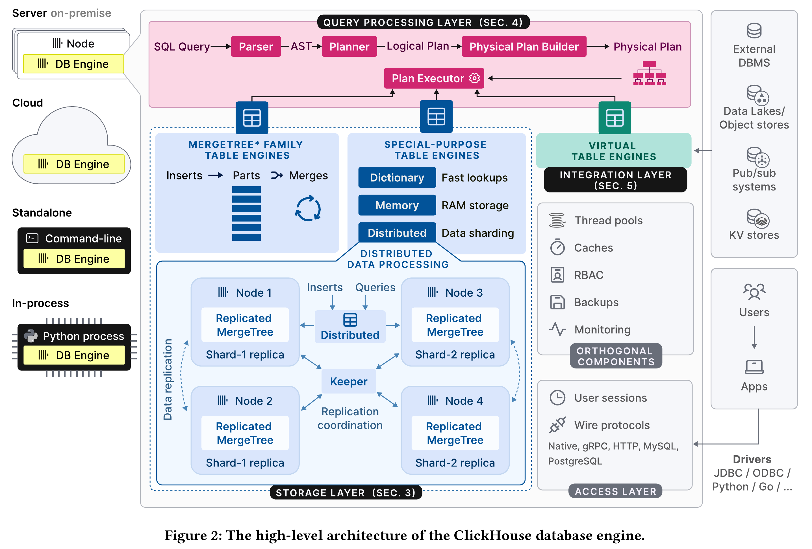

:) CREATE TEMPORARY TABLE test (x Tuple(a String, b Array(Tuple(c Tuple(e String), d String))), y String)
CREATE TEMPORARY TABLE test
(
`x` Tuple(
a String,
b Array(Tuple(
c Tuple(
e String),
d String))),
`y` String
)
create_if_not_exists As a Setting
A usual way:
CREATE TABLE IF NOT EXISTS test (x UInt8) ORDER BY ();
A new option, since 24.9:
SET create_if_not_exists = 1;
CREATE TABLE test (x UInt8) ORDER BY ();
— "out of band" if not exists specification as a setting.
Developer: Peter Nguyen.
New Functions overlay, overlayUTF8
Replaces a fragment in a string with another string in a specified position.
SELECT overlay('Hello, world!', 'test', 8, 5) AS res
┌─res──────────┐
1. │ Hello, test! │
└──────────────┘
WITH 'Hello, world!' AS s, 'test' AS replacement, 8 AS pos, 5 AS length
SELECT concat(substring(s, 1, pos - 1),
replacement,
substring(s, pos + length)) AS res
┌─res──────────┐
1. │ Hello, test! │
└──────────────┘
Developer: TaiYang Li.
input_format_json_empty_as_default
:) CREATE TEMPORARY TABLE test (x String DEFAULT 'ClickHouse')
:) INSERT INTO test FORMAT JSONEachRow {"x":""}
┌─x─┐
1. │ │
└───┘
:) SET input_format_json_empty_as_default = 1
:) INSERT INTO test FORMAT JSONEachRow {"x":""}
┌─x──────────┐
1. │ │
2. │ ClickHouse │
└────────────┘
:) ALTER TABLE test ADD COLUMN y UInt8 DEFAULT 123
:) INSERT INTO test FORMAT JSONEachRow {"x":"","y":""}
┌─x──────────┬───y─┐
1. │ │ 0 │
2. │ ClickHouse │ 0 │
3. │ ClickHouse │ 123 │
└────────────┴─────┘
Developer: Alexis Arnaud.
input_format_json_empty_as_default
But you will rarely need it:
— omitted fields in JSON are interpreted as default;
— input_format_null_as_default is also enabled,
and nulls in JSON will be interpreted as default;
The new setting, input_format_json_empty_as_default is for rare cases when an empty string should be mapped to the default expression.
DELETE ... IN PARTITION
DELETE FROM test IN PARTITION 202409 WHERE data LIKE '%trash%'
An option for DELETE query to explicitly limit it for a specified partition.
It avoids copying parts metadata for unrelated partitions.
Developer: Sunny.
system.projections
A table in ClickHouse can contain "projections" — they represent the same data in a different physical order or an aggregation, to automatically optimize queries by using this data.
CREATE TABLE hits (CounterID UInt32, URL String
PROJECTION totals (SELECT CounterID, count(), uniq(URL) GROUP BY CounterID)
) ENGINE = MergeTree ORDER BY (CounterID, EventTime);
A new system table to introspect projections.
Demo
Developer: Jordi Villar.
_headers Column For URL Engine
Obtain a dictionary of HTTP response headers when querying a remote server.
SELECT _headers, *
FROM url('https://api.github.com/repos/ClickHouse/ClickHouse')
FORMAT Vertical
Demo
Developer: Flynn.
arrayZipUnaligned
:) SELECT arrayZip([1, 2, 3], ['Hello', 'world'])
Received exception:
The argument 1 and argument 2 of function arrayZip have different array sizes.
:) SELECT arrayZipUnaligned([1, 2, 3], ['Hello', 'world']) AS res
┌─res────────────────────────────────┐
1. │ [(1,'Hello'),(2,'world'),(3,NULL)] │
└────────────────────────────────────┘
Developer: TaiYang Li.
Performance Improvements
Hive-Style Partitioning
A partitioning of data into different directories,
when an object path contains sub-directories in the form of key=value.
— enables virtual columns from the paths: type, year, quarter and automatically infers their types.
ClickHouse 24.9:
— does automatic partition pruning!
Demo
Developer: Yarik Briukhovetskyi.
Faster Array/Map Construction
:) SELECT [a, b, c] FROM table
Demo
Developer: TaiYang Li.
Faster JOINs
By a low-level optimization for the case of repeating keys.
Demo
Developer: KevinyhZou.
Something Interesting
Iceberg On Azure And Local
In version 24.8, Iceberg tables were supported only for S3.
In version 24.9, it is supported for Azure Blob storage
and local filesystem.
Now there are IcebergS3, IcebergAzure, and IcebergLocal table engines,
as well as icebergS3, icebergAzure, and icebergLocal table functions.
Developer: Daniil Ivanik.
Multiple Credentials For a User
-- create a user with two alternative passwords:
CREATE USER test IDENTIFIED
BY 'abc' VALID UNTIL '2024-10-01',
BY 'def' VALID UNTIL '2024-11-01';
-- create a user with multiple authentication methods:
CREATE USER test IDENTIFIED
WITH sha256_password BY 'abc',
WITH ssh_key BY KEY '...' TYPE 'ssh-ed25519';
-- add a new method:
ALTER USER test ADD IDENTIFIED ...;
-- keep only the latest method:
ALTER USER test RESET AUTHENTICATION METHODS TO NEW;
Developer: Arthur Passos.
APPEND For Refreshable Materialized Views 🧪
CREATE MATERIALIZED VIEW [IF NOT EXISTS] [db.]table_name
REFRESH EVERY|AFTER interval [OFFSET interval]
RANDOMIZE FOR interval
DEPENDS ON [db.]name [, [db.]name [, ...]]
[APPEND] [TO [db.]name] [(columns)] [ENGINE = engine]
AS SELECT ...
Refreshable Materialized Views exist since 23.11.
The APPEND mode is new in 24.9.
Developer: Michael Kolupaev.
APPEND For Refreshable Materialized Views 🧪
Run the SELECT query in background and atomically
replace or append to the table with its result.
Run the refresh process using a flexible configured schedule.
Support a dependency graph with multiple materialized views.
Example: periodically request an external API with the url table function
and keep accumulating results in a table.
Developer: Michael Kolupaev.
Variant Types In Schema Inference 🧪
Now ClickHouse supports automatic usage of the Variant data type
for schema inference.
SELECT DISTINCT arrayJoin(JSONAllPaths(data)) FROM website_traffic;
SELECT distinctJSONPaths(data) FROM website_traffic;
Developer: Pavel Kruglov.
Bonus
50th International Conference on Very Large Databases, Guangzhou, China - August 26-30, 2024.

Integrations
ClickPipes:
— allows custom certificates for authentication in Kafka (SASL, TLS);
— shows the ingestion latency graph for Kafka and Kinesis;
— scaling controls for (private beta);
— allows to put the entire raw message into a single column.
Java connector: version 0.7.0 with memory and performance optimizations.
— How we built our DWH;
— VLDB paper + videos;
— Building apps with query API endpoints;
— Salesforce analytics with Estuary Flow;
— ePilot migrated from Redshift and Influx to ClickHouse;
— How Weights&Biases uses ClickHouse;
— ClickHouse for ML & AI;